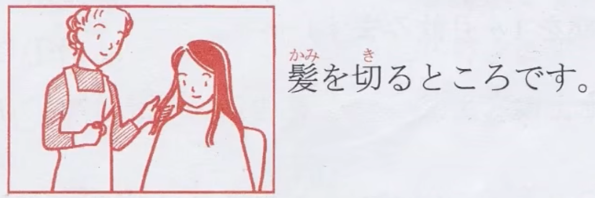
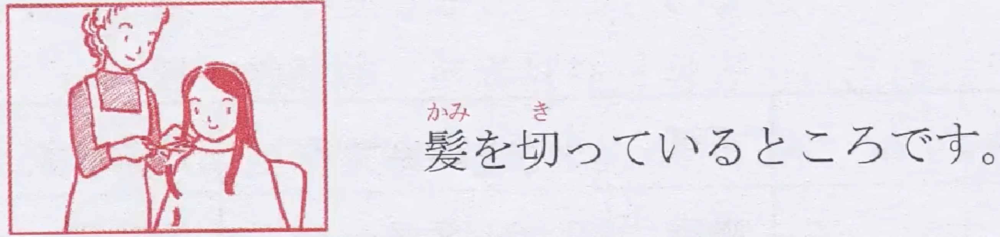
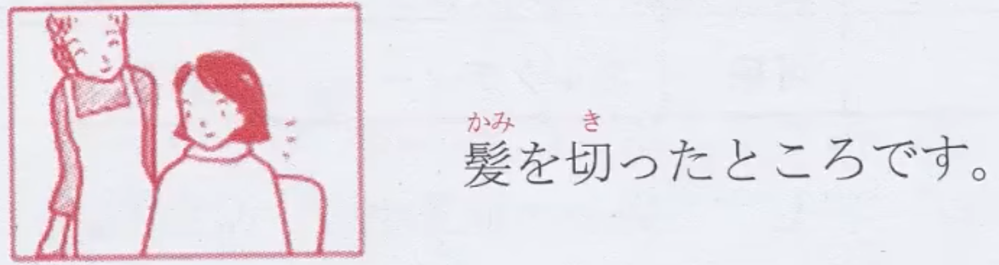

ところ #ところ #
-
ところで #N3
- 用于转移话题，常用在段落开头或是对话中途停顿后的开头。 #转移话题
- 说明：“对了……”、“话说……”。
- 例文：会議はこれで終わります。ところで、取引先のお客さんはまだ来ませんか。会议到此结束。话说，客户还没来吗？
- あとで
- 然后
- ても
- 即使
- 用于转移话题，常用在段落开头或是对话中途停顿后的开头。 #转移话题
-
〜ところ #N4
- 接续：动词辞书形+ところ
- 说明：“正要……”，“正打算……”
- 例文：これからパンを焼くところです。正打算要烤面包
- 注意：表示正在处于动作刚要发生而还未发生的阶段。搭配：「ちょうど」（正好）、「今」（马上就要）、「これから」（接下来）
- 
-
〜ているところだ #N4
- 接续：动词「ている形」+ところだ
- 说明：“正在……”
- 例文：山田社長は電話をかけているところです。山田社长正在打电话。
- 注意：表示动作正在进行的阶段。
- 
-
〜たところだ #N4
- 接续：动词「た形」+ところだ
- 说明：“刚刚……”。「〜たところだ」表示动作或变化刚刚结束的阶段。
- 例文：今、お茶を入れたところなんです。我刚泡好茶。
- 注意：「〜たところだ」表示动作或变化刚刚结束的阶段，与现在这个时间点的时间间隔很短。搭配：「今」（刚刚）、「さっき」（刚才）、「ちょっと」（稍前）
- 
-
〜たところ #N2
- 接续：动词た形+ところ后面加顿号
- 说明：表示做了前项的动作之后，发生或发现了后项的结果。
- 例文：山田さんの家へ遊びに行ったところ、ちょうど川本さんが来ていた。我去山田家玩，结果川本也来了。
- 注意：相当于「〜たら」。
如果结果
-
〜たところが #N2
- 接续：动词た形+ところが
- 说明：表示逆接，“然而……”、“虽然……可是……”。可以理解为既定逆接。
- 例文：今朝は早めに出かけたところが、交通事故に巻き込まれ遅刻してしました。今天早上提早出门，可遇到交通事故，迟到了。
- 注意：表示逆接时，一定要用「〜たところが」的形式，后项的结果是与预想、期待相反的。
-
〜たところで #N2
- 接续：动词た形+ところで
- 说明：“即使……也……”，表示逆接。可以理解为假定逆接。
- 例文：もともと勉強する気がないのなら、大学を受けてみたところで何の意味があるのか。如果原本就没心思学习，那就算参加了大学入学考试又有何意义呢？
- 注意：表示即便像前项那样也未必能达到期待的结果，后项多为否定的表达方式。搭配：「たとえ/どんなに/いくら」
-
〜ところだった #N2
- 接续：动词辞书形+ところだった
- 说明：“差一点就……”、“险些……”。千钧一发
- 例文：気がつくのが遅かったら、危うく家事になるところだったよ。如果发现晚了，险些就酿成火灾了。
- 注意：可以用「もう少しで/危うく」等来加强语气，表示“差一点就……”。
-
〜ところに/ところへ #N2
- 接续：动词辞书形・た形・ている形+ところに/ところへ
- 说明：“正当……的时候”。
- 例文：ちょうど彼女のうわさをしているところへ、本人がやってきた。正在谈论有关她的传闻时，当事人就过来了。
- 注意：表示正在做某事时发生了另一件事情，多是出乎意料的事情。惯用表达有「いいところに来ました」，表示“你来的正是时候”。
-
〜ところを #N2
- 〜ところを
- 接续：动词辞书形・た形・ている形+ところを
- 说明：“正当……的时候”。
- 例文：犯人は駅前で買い物をしているところを、警察に捕まった。罪犯正在车站前面买东西的时候，被警察逮捕了。
- 注意：后项的动词很有限，多是这些「見られる（被看见）」、「見つかる（被发现）」、「捕まる（被抓住）」表示看到或发现等意义的动词，对前项叙述的行为有制止或阻挡等意思。
- 〜ところを見ると
- 接续：动词た形・ている形+ところを見ると
- 说明：“从……来看”。
- 例文：朝からニコニコしているところを見ると、何かいいことがあったに違いない。从早上开始就笑眯眯的，看样子一定有什么好事情。
- 注意：前项提出某个事实，说话人根据这一事实做出后项的判断。
- 〜ところを
-
〜ところを #N1
- 接续：（动词辞书形・た形・イ形・ナ形—な・名+の）+ところを
- 说明：表示时间、场景、状况等，“当……的时候”、“在……之中”。
- 例文：お忙しいところを、恐れ入りますが、どうかよろしくお願いします。在您百忙之中实在是抱歉，这件事情就拜托您了。（お忙しいところを。这么说也行）
- 注意：后面常用寒暄用语，如「お邪魔してすみません」、「ありがとうございます」等，或者一些动词的被动语态。如「見られる」、「見つけられる」、「目撃される」、「発見される」、「邪魔される」、「妨げられる」、「注意される」、「呼び止められる」、「捕まえられる」、「逮捕される」等。
-
〜たところで #N1
- 接续：动词た形+ところで
- 说明：“即使……也（未必）……”。
- 例文：いくら頑張ったところで、運命を変えることができない。再怎么努力也没法改变自己的命运。
- 注意：表示假定条件的逆接，假设前项的条件成立，也未必会出现后项的结果。常与「いくら」、「どんなに」、「たとえ」等词一起使用。
-
〜としたって/としたところで/にしたところで/にしたって #N1
- 接续：动词普通形・イ形・ナ形语干・名 + としたって/としたところで/にしたところで/にしたって
- 说明：表示让步转折，即使在前项的条件下，后项也不成立。“即使……也……”、“就算……也……”
- 例文：社長にしたところで、今回の改革（かいかく）案に疑問を抱いているらしい。好像就连社长也对这次的改革方案持有疑问。
- 注意：「〜としたって」、「〜にしたって」是「〜としたところで」、「〜にしたところで」在口语中的表达方式。该句型也可以与疑问词一起使用，意思是“无论……也……”、“不管……也……”。
-
〜というところだ/といったところだ #N1
- 接续：动词辞书形/名+というところだ/といったところだ
- 说明：表示界限、范围，“大概是……”、“大致上……”、“最多不过是……”。
- 例文：自分で料理を作るといっても、せいぜいサラダ とか ゆで卵といったところだ。说是自己会做饭，但最多不过是会做些色拉和煮鸡蛋而已。
- 注意：前面常用表示程度、数量、级别的词。强调“再多、再好也不过如此”的语气
-
〜に負うところが多い/に負うところが大きい #N1
- 接续：名+に負うところが多い/に負うところが大きい
- 说明：表示承蒙某人做某事的恩惠，“得益于……”，“多亏了……”。
- 例文：この研究の成功はチームメンバーの協力に負うところが大きい。本次研究的成功，很大程度上得益于各位组员的鼎力相助。
- 注意：「負う」在语法中的意思是“得益于……”，“多亏了……”。
-
〜によるところが大きい #N1
- 接续：名+によるところが大きい
- 说明：表示前后两项的关联，某件事情在很大程度上依赖后项，跟后项有密不可分的关系。“得益于……”、“多亏了……”、“主要依赖于……”、“原因在于……”。
- 例文：今の不況は金融政策の失敗によるとこが大きい。现在的不景气很大程度上是由于金融政策的失败。
- 注意：意思与「〜に負うところが大きい/多い」相近。但是「〜によるところが大きい」既可以表示积极的意思也可以表示消极的意思。「〜に負うところが大きい/多い」的意思是“得益于……”，多表示积极的意思。